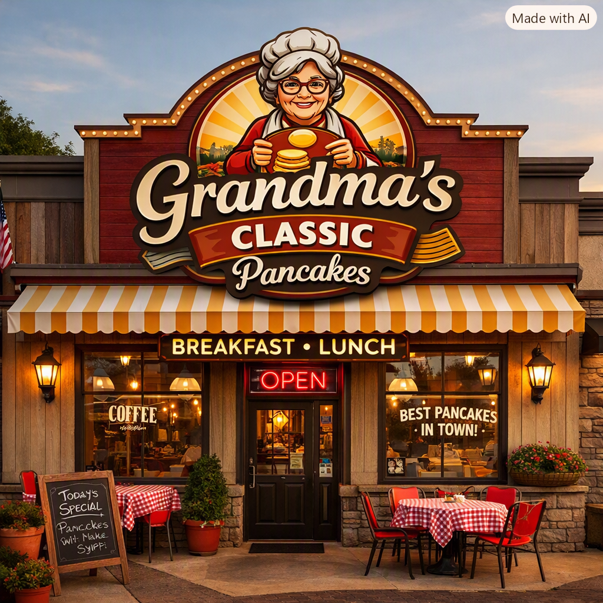
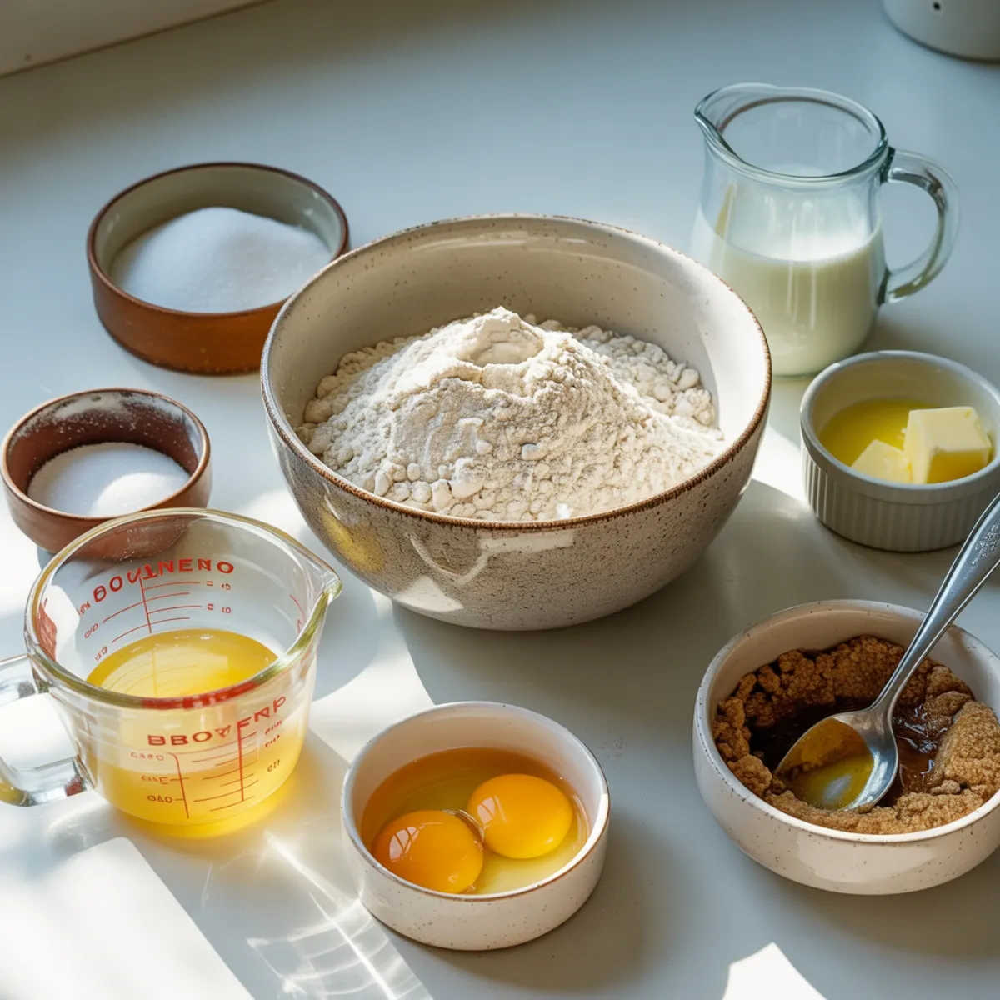
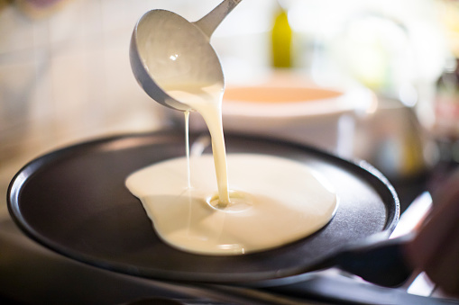
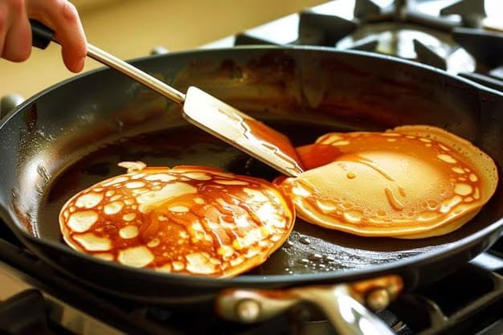
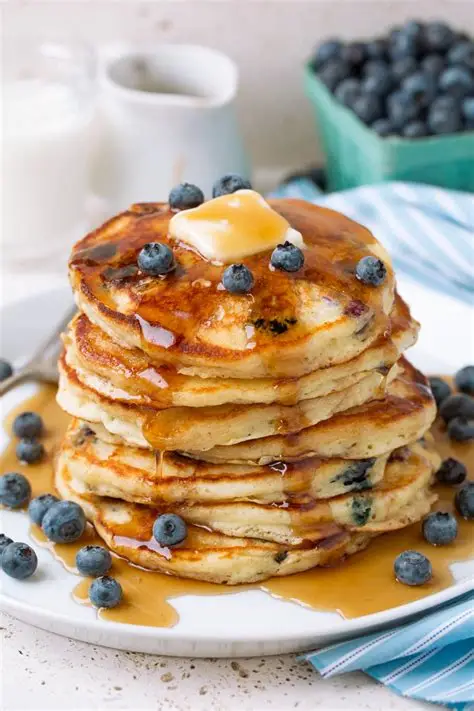
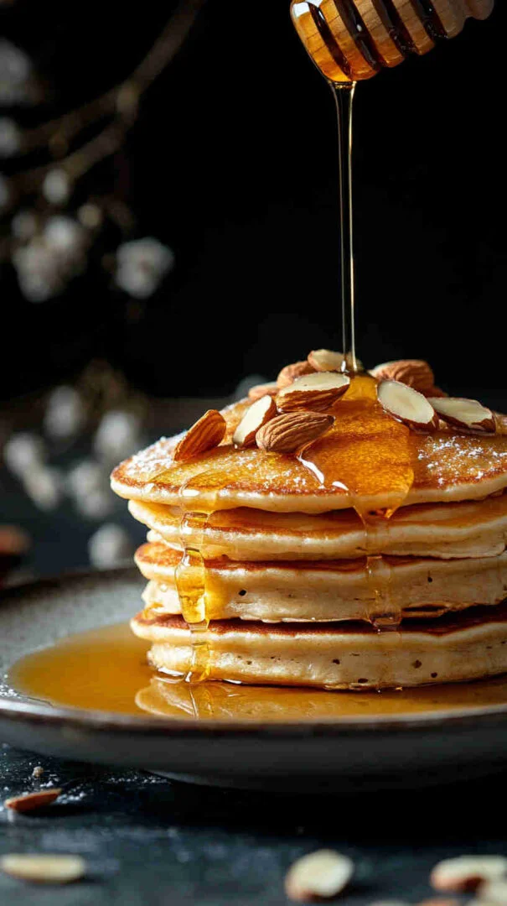

These fluffy, golden pancakes are a timeless family favorite, inspired by Grandma’s cozy weekend breakfasts. Made with simple pantry staples, they’re soft, buttery, and lightly crisp around the edges—perfect for drizzling with maple syrup and serving with love.
Ingredients
Ingredients and quantities usage ae key requirements needed to be followed to make these quality yummy pancakes.
- 1 cup all-purpose flour
- 1 tablespoon sugar
- 1 teaspoon baking powder
- 1/2 teaspoon salt
- 1/2 cup unsalted butter, softened
- 1 cup granulated sugar
- 2 large eggs
- 2 teaspoons vanilla extract
- 2 cups whole milk
- 1/2 cup chopped pecans
Directions
To make these pancakes with same quality and taste obtained from Grandma's Classic Pancakes, follow these simple steps:
- Preheat oven to 350°F (180°C). Grease a 9x5 inch baking pan.
- In a large mixing bowl, whisk together flour, sugar, baking powder, and salt.
- In a separate mixing bowl, beat butter and sugar until light and fluffy.
- Beat in eggs, one at a time, followed by vanilla.
- Mix in the flour mixture until just combined.
- Gradually add dry ingredients, mixing just until combined.
- Add milk and mix until just combined.
- Fold in chopped pecans.
- Pour batter into prepared pan.
- Bake for 25-30 minutes, until a toothpick inserted into the center comes out clean.
- Let cool completely before cutting into squares.
Recipe Details
We explain below on why some of the ingredients stated above are usedThe main important thing to remember is that the quality of the pancakes is the same as the Grandma's Classic Pancakes. The quality of the ingredients is also the same. So, the preparation time, cooking time, and servings are also the same.
Addition of the milk and the pecans are the key requirements needed to make these quality yummy pancakes.Reason for this is that the pecans give the pancakes a slight crunchiness and the milk gives them a creamy texture.Adding this specific amount of ingredients will make the pancakes taste better and will also make them more fluffy.
The flour as we know is the basic ingredient needed to make pancakes, Sugar is for sweetening the pancakes ,eggs inclusion in the ingredient is for making the pancakes fluffy , the vanilla extract is for adding the flavor to the pancakes and baking powder is for making the pancakes rise..
Preparation time: 10 minutes
Cooking time: 25-30 minutes
Servings: 4
Difficulty: Easy
Gallery



.webp)
.webp)



FAQ
Q:How do I make Grandma’s classic pancakes extra fluffy?
A:Mix the batter just until combined—small lumps are fine—and make sure your baking powder is fresh. Over-mixing can make pancakes dense.
Q:How do I make Grandma’s classic pancakes extra sweet?
A:Add a little extra sugar or top the pancakes with berries, chocolate chips, or cinnamon sugar.
Q:Can I make the pancake batter ahead of time?
A:It’s best to cook the batter soon after mixing so the pancakes stay fluffy. If needed, refrigerate it briefly and stir gently before cooking.
Q:How do I know when to flip the pancakes?
A:Flip when bubbles appear on the surface and the edges look set, then cook the other side until golden.
Q:Can I use a different type of flour?
A:Yes, you can use any type of flour you prefer. Just keep in mind that the texture and flavor may be slightly different.
Q:Can I add toppings or mix-ins to the batter?
A:Yes. Try blueberries, chocolate chips, or chopped nuts; fold them in gently just before cooking.
Notes
These fluffy, golden pancakes are a timeless family favorite, inspired by Grandma’s cozy weekend breakfasts. Made with simple pantry staples, they’re soft, buttery, and lightly crisp around the edges—perfect for drizzling with maple syrup and serving with love.
Serve warm with a generous pat of batter and a drizzle of maple syrup for the classic finish. For extra comfort, add fresh berries, a dusting of powdered sugar, or a side of crispy bacon to make Grandma’s pancakes feel like a special weekend breakfast.
Grandma’s classic pancakes are wonderfully versatile, and small changes can create different textures and flavors. For a lighter, fluffier stack, use a little cake flour or let the batter rest for a few minutes before cooking. For a sweeter version, add a little extra sugar or top the pancakes with berries, chocolate chips, or cinnamon sugar. A nutty twist works well with chopped pecans or walnuts, while a savory version can be made by reducing the sugar slightly and adding herbs or cheese.These variations can happen because of a few common factors: over-mixing the butter can make the pancakes dense, old or inactive baking powder can prevent proper rising, and batter that is too thick or too thin will affect the texture. Cooking on a pan that is too hot can brown the outside before the inside cooks, while a pan that is too cool can make the pancakes flat and greasy. Small adjustments to mixing, batter consistency, and heat can help achieve the perfect classic pancake every time.